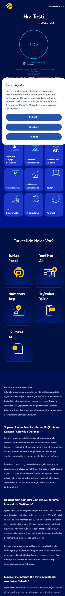
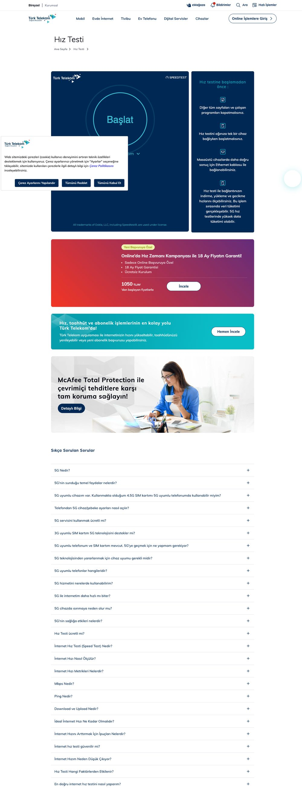
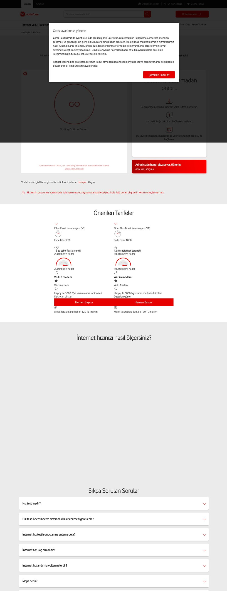
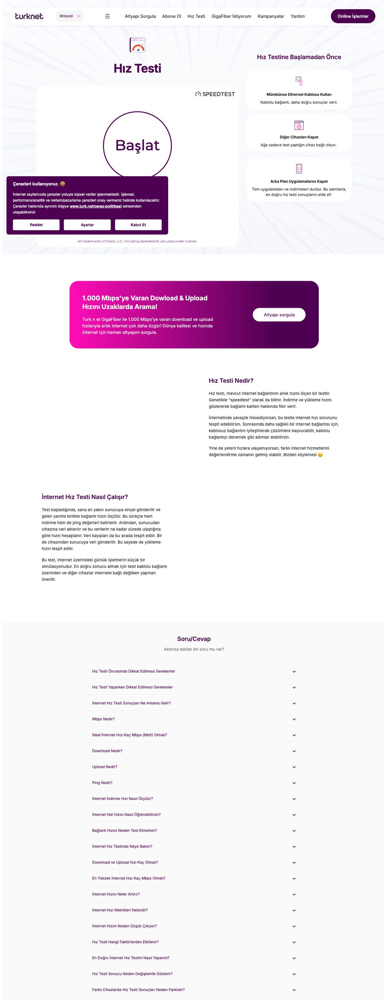

4,17 milyon aylık aramada 1. sıraya çıkış + sayfayı dönüşüm/lead motoruna çevirme
Turkcell hız testi sayfası, en yüksek hacimli sorgularda zaten ilk 4'te. speedtest'te #2, hız testi / internet hız testi / speed test'te #4. Aradaki fark; içerik derinliği, sayfa otoritesi (URL Rating) ve dönüşüm mimarisinde. Aynı sayfa bugün ölçüm aracı olarak çalışıyor; küçük ama doğru hamlelerle hem 1. sıraya hem de lead/dönüşüm kanalına dönüştürülebilir.
Veriler nereden geldi, nasıl doğrulandı
Tüm sayılar canlı araç çağrılarıyla, gözlem tarihiyle alınmıştır; tahmin/uydurma yoktur. Birden çok kaynak arasında küçük hacim/KD farkları olabilir; bu raporda Ahrefs esas alınmış, DataForSEO sayfa içi/içerik analizi için kullanılmıştır.
Kelime hacmi, KD, niyet, SERP sıraları (serp-overview), talep havuzu (matching terms). Ülke: tr.
Sayfa içi denetim (on_page), içerik parse, rakip sayfa distilasyonu, şema kontrolü.
Hedef + rakip sayfa ekran görüntüleri (masaüstü/mobil), canlı SERP gözlemi.
Gözlem tarihi: 26 Haziran 2026. Rakip seti: Türk Telekom, Fast.com, Speedtest.net (Ookla), Vodafone, TurkNet, Superonline (SERP ilk sayfa). Rakip içerik distilasyonu 6 paralel ajanla yürütülmüştür. İşaretleme: ★ önceden iletildi +★ geliştirilmiş Yeni ✓ uygulandı.
Hedef sayfa: ölçüm aracı (hub) · iyi sıralanıyor ama iki yapısal sorun var
Sayfa tipi: interaktif araç / hub. Ana içerik gömülü speedtest.net (Ookla) iframe'i; altında 37 maddelik FAQ ve Superbox/ev-interneti kampanya kutuları var. Teknik olarak hızlı (CLS 0, TTI 684 ms, onpage skoru 98,9). Ancak iki yapısal sorun 1. sıranın ve dönüşümün önünde duruyor.
turkcell.com.tr üzerinde ama title "…- Superonline", meta description ve tüm gövde "Superonline Hız Testi…" dilinde. Kullanıcı "Turkcell hız testi" arayıp Superonline gövdesine düşüyor; marka sinyali bölünüyor. Türk Telekom ve Vodafone sayfaları baştan sona kendi ana markaları altında.


Doğrulanmış sıralar · 4 ana sorgu
Kaynak: Ahrefs serp-overview (tr), gözlem 21-26 Haz 2026. DR=Domain Rating, UR=URL Rating. Turkcell satırı sarı şeritli.
Turkcell sırası — ana 4 sorgu
Sayfa otoritesi (URL Rating)
"hız testi" — 1.570.000/ay · Turkcell #4
| # | Sonuç | DR | UR | Trafik |
|---|---|---|---|---|
| 1 | knowledge_card (Google kutusu) | – | – | – |
| 2 | turktelekom.com.tr/hiz-testi | 76 | 21 | 928.675 |
| 3 | fast.com/tr | 86 | 20 | 668.644 |
| 4 | turkcell.com.tr/hiz-testi · Turkcell | 78 | 12 | 496.355 |
| 5 | speedtest.net | 91 | 46 | 1.998.212 |
| 6 | vodafone.com.tr/hiz-testi | 73 | 23 | 271.426 |
| 7 | turk.net/hiz-testi | 66 | 12 | 267.459 |
| 9 | superonline.net/hiz-testi (kendi grubu, rakip pozisyonda) | 59 | 13 | 162.156 |
"speedtest" — 1.280.000/ay · Turkcell #2
| # | Sonuç | UR |
|---|---|---|
| 1 | speedtest.net (+sitelink) | 46 |
| 2 | turkcell.com.tr/hiz-testi | 12 |
| 3 | turktelekom.com.tr/hiz-testi | 21 |
| 5 | fast.com/tr | 20 |
Fırsat speedtest.net dışında rakip yok; #1 en ulaşılabilir burada.
"speed test" — 478.000/ay · Turkcell #4
| # | Sonuç | UR |
|---|---|---|
| 1 | speedtest.net | 46 |
| 2 | turktelekom.com.tr/hiz-testi | 21 |
| 3 | knowledge_card | – |
| 4 | turkcell.com.tr/hiz-testi | 12 |
"internet hız testi" (844K) de aynı tablo: Turkcell #4, üstte TT ve fast.com.

Hedef kelimeler ve çevresindeki talep
Ana hedef kelimeler — aylık arama hacmi
| Kelime | Hacim/ay | KD | Niyet | Mobil% | Not |
|---|---|---|---|---|---|
| hız testi | 1.570.000 | 69 | info | 76 | Ana hedef |
| speedtest | 1.280.000 | 72 | info | 65 | Turkcell #2 |
| internet hız testi | 844.000 | 62 | info | 86 | Ana hedef |
| speed test | 478.000 | 70 | info | 56 | Ana hedef |
| türk telekom hız testi | 72.000 | 64 | branded | 54 | Rakip-branded |
| ip sorgulama | 15.000 | 54 | info | 42 | Stale link Superonline'a gidiyor |
| turkcell hız testi | 8.600 | 54 | branded | 78 | Kendi-branded |
| ping testi | 2.900 | 1 | info | 28 | KD 1 — kolay #1 Superonline'a gidiyor |
| 5g hız testi | 60 | 63 | info | 96 | AI Overview var |
- ping testi — 2.900/ay, KD 1. Turkcell'in native sayfası var (turkcell.com.tr/internet-ping-testi) ama hız testi sayfası linki Superonline'a çıkıyor. Gömülü ping aracı + on-domain link ile 1. sıra çok kolay.
- ip sorgulama — 15.000/ay, KD 54. Native Turkcell aracı yok; link Superonline'a gidiyor. Araç fırsatı.
- internet hız testi ookla — 1.600/ay, KD 6.
- klavye hız testi (42.000/ay) ve 10/on parmak hız testi (~5.500/ay) yüksek hacimli ama klavye/yazma testi niyeti; internetle ilgisi yok. Bu kelimeler için içerik üretmek konu odağını bozar; dışarıda bırakılmalı.
Talep havuzunda ayrıca bağlantı türü varyasyonları öne çıkıyor: adsl hız testi (16.000), wifi hız testi (9.700), fiber hız testi (600), mobil hız testi (150). Bunlar sayfada birer içerik/FAQ bloğuyla tek tek karşılanabilir (long-tail kapsama).
Generative Engine Optimization · boş bir oyun alanı
SERP'te "hız testi" ve türevlerinde sürekli bir knowledge_card görünüyor; "5g hız testi" gibi sorgular AI Overview tetikliyor. İncelenen 6 rakibin hiçbirinde JSON-LD schema markup yok. Bu, hem rich result hem AI alıntılanabilirliği için tamamen boş bir alan.
GEO yol haritası
- Alıntılanabilir tanım pasajı: "Hız testi nedir?" için 40-60 kelimelik, net, tek paragraf tanım (knowledge_card + AI Overview hedefi). Yeni
- FAQPage schema: 37 maddelik mevcut FAQ machine-readable işaretlenirse AI Overview/PAA alıntılaması artar. +★
- WebApplication schema: sayfanın bir ölçüm aracı olduğunu tanımlar. +★
- machine-readable karşılaştırma tablosu (hız ↔ kullanım/indirme süresi) + Dataset schema. +★
- robots.txt + llms.txt: GPTBot / Google-Extended / PerplexityBot erişimi açık; llms.txt ile kaynak özetleme. Yeni
- dateModified tazeliği: içerik güncel tutulduğunda AI sistemleri taze kaynağı tercih eder. Yeni
Karşılaştırma matrisi · Türk Telekom neden üstte
| Marka | Sıra | Test aracı | Dönüşüm/lead | FAQ | Şema |
|---|---|---|---|---|---|
| Türk Telekom | #2 | Markalı Ookla (kendi alan adı) | 18 ay fiyat garantili kampanya + 5G başvuru + altyapı sorgulama | 31 | Yok |
| Vodafone | #6 | Kendi widget'ı | Fiber 200/1000 net fiyat kartları (799/1.149 TL) + "Hemen Başvur" | 8 | Yok |
| TurkNet | #7 | Kendi widget (jitter+packet loss) | "Altyapı Sorgula" x4 + "GigaFiber İstiyorum" lead formu | 32 | Yok |
| Turkcell | #4 | speedtest.net iframe ("Host seç") | Dağınık kampanya kutuları; net teklif/akıllı öneri yok | 37 | Yok |
| Fast.com | #3 | Netflix tescilli (oto-başlar) | Yok (kasıtlı) | 8 | Yok |
| Speedtest.net | #1/5 | Native Ookla (çoklu metrik) | Uygulama + premium upsell | 0* | Yok |
*Speedtest.net ana sayfasında FAQ yok; ayrı sayfada. Turkcell FAQ sayısı (37) zaten en yüksek — ama şemasız, dolayısıyla bu derinlik AI/rich result'a yansımıyor.
Türk Telekom neden #2 (Turkcell'in üstünde)?
- İhtiyaca göre hız eşleme + indirme süresi tablosu (yapısal, taranabilir; kendi içerik servislerini içeri çekiyor). Turkcell'de düz metin var, tablo yok.
- Marka tutarlılığı: baştan sona "Türk Telekom". Turkcell gövdesi "Superonline".
- Markalı test motoru (kendi alan adı); Turkcell public speedtest.net iframe + manuel "Turkcell Host" seçimi (sürtünme).
- 5G başvuru akışı (5555 SMS, cihaz uyumluluk) + test sayfasında net teklifli kampanya bandı.
Rakip sayfalar (kanıt)



Stale linkler: superonline.net'e çıkan bağlantılar ve Turkcell içi karşılıkları
Sayfadaki menü ve gövde linklerinin büyük kısmı superonline.net'e gidiyor. superonline.net aynı SERP'te rakip pozisyonunda olduğu için bu linkler hem kullanıcıyı Turkcell ekosisteminden çıkarıyor hem de sayfa otoritesini (equity) rakip domaine sızdırıyor. Aşağıdaki tabloda her link için Turkcell içi karşılık ve öneri var.
| Anchor | Mevcut hedef (superonline.net) | Turkcell içi karşılık / öneri | Durum |
|---|---|---|---|
| Ping Testi | /internet-ping-testi | turkcell.com.tr/internet-ping-testi zaten var → on-domain'e çevir. İdeali: gömülü ping aracı (KD 1, kolay #1). | Yeni |
| IP Sorgulama | /ip-adresi-sorgulama | Turkcell'de native sayfa yok (/ip-sorgulama → 404). Öneri: Turkcell içi IP sorgulama aracı oluştur (15.000/ay, KD 54). | Yeni |
| altyapı sorgulama (gövde) | /altyapi-sorgulama | turkcell.com.tr/…/superbox-…-altyapi-sorgulama zaten var | Yeni |
| fiber internet / 1000 / 200 Mbps | /ev-interneti/… | turkcell.com.tr/ev-interneti tarife sayfaları | Yeni |
| Yazlık İnternet · Ev İnterneti Kampanya | /yazlik-internet · /ev-interneti/… | turkcell.com.tr/ev-interneti karşılıkları | Yeni |
Ölçüm aracını lead/dönüşüm motoruna çevirmek
Sayfa bugün çok trafik alıyor (tahmini 496K/ay organik) ama ziyaretçi testi yapıp ayrılıyor; net bir dönüşüm yolu yok. Rakiplerin en iyi fikirleri + hiçbirinde olmayan bir fikirle sayfa bir lead kanalına dönüştürülebilir. Bu önerilerin canlı bir uygulaması tasarım örneğinde 4 varyant olarak sunulmuştur.
Kategori liderliği fırsatı
Sonuç-tetikli akıllı paket önerisi. Test biter bitmez ölçülen hıza göre bağlamsal mesaj: "Hızınız 38 Mbps — 4K yayın ve oyun için Fiber 100'e geçin" + tek tık başvuru. SERP'teki hiçbir rakipte yok. Hem dönüşümü hem "en akıllı araç" algısını getirir. +★ (PDF'teki dinamik 5G mesajının geliştirilmiş, paket-eşlemeli hali)
Rakiplerden alınacak en iyi 4 fikir
- Net teklifli kampanya bandı = TT netliği + Vodafone somut fiyatı Yeni
- Sayfa içi tekrarlı adres/altyapı lead akışı (TurkNet) Yeni
- Hız-ihtiyaç tablosunun her satırını pakete linkleme Yeni
- Fast.com sıfır-sürtünme UX + sonuç sonrası operatör hunisi Yeni
Tasarım örneği, sayfanın header/navigasyon/footer kabuğunu koruyup gövdeyi 4 dönüşüm hipoteziyle yeniden kurar: A·Akıllı Sonuç, B·Sade Hız, C·Değer/Paket, D·Lead/Altyapı.
Teknik denetim
| Alan | Bulgu (26 Haz 2026) | Öncelik |
|---|---|---|
| Title | "Hız Testi, Speed Test, İnternet Hız Testi - Superonline" (55 krk) → marka kuyruğu Superonline | P0 |
| Meta description | "Superonline Hız Testi…" (143 krk) → Turkcell marka tutarlılığı yok | P1 |
| H1 | "Hız Testi" (tek başına; marka/değer yok) | P1 |
| Schema | Yok (FAQPage/WebApplication/HowTo/Breadcrumb hiçbiri) | P0 |
| Breadcrumb | Yok (TT'de var) | P2 |
| İç/dış link | 11 iç · 17 dış (çoğu superonline.net → equity kaçağı) | P0 |
| İçerik/okunabilirlik | low_content_rate + low_readability_rate (koyu tema, yoğun metin) | P1 |
| Görsel | no_image_title (20 görselde title yok) | P2 |
| CWV / Hız | CLS 0 ✓ · TTI 684 ms ✓ · onpage 98,9 ✓ · LCP iframe'den ölçülemiyor | P2 |
| Render-blocking | 2 script + 1 stylesheet | P2 |
CrUX/PSI saha verisiyle teyit önerilir; iframe tabanlı ana içerik nedeniyle LCP atfı net değil, hero LCP öğesi açıkça tanımlanmalı.
Yapılacaklar · işaretli ve önceliklendirilmiş
Hız Testi, Speed Test, İnternet Hız Testi | Turkcell yap (veya "Turkcell Superonline"). Gövdedeki "Superonline" dilini Turkcell çatısına taşı. "speedtest"te zaten #2; marka netleşince hem branded hem generic kazanır.İletilen iki çalışma · madde madde güncel durum
Talep edildiği gibi: önceden iletilenler ★ ile; geliştirilmiş haller +★ ile işaretlendi. Canlı sayfaya göre uygulanmış olanlar ✓.
Çalışma 1 · PDF "5G Optimizasyon Önerileri"
| Öneri | Durum | Bu rapordaki karşılığı |
|---|---|---|
| GO butonu 5G mini-banner CTA + inlink | Uygulanmamış | ★ CRO sekmesi |
| Test sonucu dinamik 5G mesajları | Uygulanmamış | +★ Akıllı paket önerisi |
| Post-test sabit 5G CTA (AGAIN yanı) | Uygulanmamış | +★ Sonuç = lead bloğu |
| "5G ile bu nasıl görünürdü?" modülü | Uygulanmamış | +★ Net fiyatlı karşılaştırma |
| 5G SSS başlıkları | Uygulanmamış | +★ 5G içerik bloğu |
| SSS sonrası güçlü son CTA | Uygulanmamış | ★ CRO sekmesi |
| Footer'a Hız Testi linki | Uygulanmamış | ★ SEO sekmesi |
| WebApplication schema | Uygulanmamış | +★ Bütünleşik şema seti |
| Dataset schema (Mbps↔MB) | Uygulanmamış | +★ Hız-ihtiyaç tablosu + Dataset |
Çalışma 2 · Excel "SSS Önerileri"
| Grup | Durum | Bu rapordaki karşılığı |
|---|---|---|
| Çekirdek SSS (Mbps, Packet Loss, Nasıl Yapılır…) | Uygulandı ✓ | ✓ doğrulandı |
| Rakip SSS (Download/Upload, Ücretli mi, Wi-Fi) | Uygulandı ✓ | ✓ doğrulandı |
| Long-tail mobil SSS (16) — ~12 eksik | Kısmen | ★ İçerik sekmesi |
| 5G SSS'leri | Uygulanmamış | +★ 5G içerik bloğu |
Ne önce yapılmalı
Faz 1 · Temel (0-4 hafta)
- Marka tutarlılığı (title/meta/gövde)
- Link-equity onarımı (superonline → turkcell)
- FAQPage + WebApplication schema
- Footer hız testi linki
Düşük efor, yüksek etki. UR ve marka sinyalini hemen iyileştirir.
Faz 2 · İçerik + GEO (4-8 hafta)
- Hız-ihtiyaç eşleme tablosu (+Dataset)
- Long-tail mobil + 5G SSS'leri
- Alıntılanabilir tanım + HowTo
- Breadcrumb + iç link ağı
TT'nin içerik avantajını kapatır, AI Overview'a girer.
Faz 3 · Dönüşüm (8-12 hafta)
- Sonuç-tetikli akıllı paket önerisi
- Net fiyatlı paket kartları
- Adres/altyapı lead akışı + form
- ping/ip araç sayfaları
Sayfayı lead/dönüşüm motoruna çevirir; tasarım örneğinde uygulandı.
| Aksiyon | Etki | Efor | Öncelik |
|---|---|---|---|
| Schema seti (FAQPage+WebApp+Breadcrumb) | Yüksek | Düşük | P0 |
| Link-equity onarımı + marka tutarlılığı | Yüksek | Düşük | P0 |
| UR yükseltme (iç/dış link) | Yüksek | Orta | P0 |
| Sonuç-tetikli akıllı paket önerisi | Yüksek | Orta-Yüksek | P1 |
| Hız-ihtiyaç tablosu + long-tail/5G SSS | Orta-Yüksek | Orta | P1 |
| ping/ip araç sayfaları (kolay #1) | Orta | Orta | P2 |
Terimler
- SERP — arama motoru sonuç sayfası.
- KD — Keyword Difficulty; ilk 10'a girmenin zorluğu (0-100).
- DR / UR — Domain Rating / URL Rating; domain ve sayfa backlink gücü.
- AI Overview — Google'ın üretken yapay zeka yanıt bloğu; kaynakları alıntılar.
- GEO — Generative Engine Optimization; AI yanıtlarında görünürlük.
- knowledge_card — SERP üstündeki tanım/bilgi kutusu.
- schema / JSON-LD — makine-okunur yapısal veri.
- FAQPage / WebApplication / HowTo / Dataset — schema.org tipleri.
- CWV (LCP/CLS/INP) — Core Web Vitals performans metrikleri.
- long-tail — düşük hacimli, niş, uzun sorgular.
Kaynaklar
Ahrefs (keyword/SERP, tr) · DataForSEO (on-page/içerik/şema) · Playwright (ekran görüntüsü/canlı SERP). Tüm gözlemler 26 Haziran 2026. Ham bulgular: data/ klasörü.